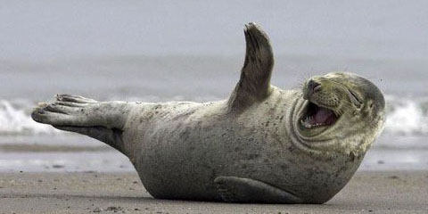

Hải cẩu con được sinh ra vào mùa thu (tháng chín-tháng mười một) ở đông Đại Tây Dương và vào mùa đông (tháng một-tháng hai) ở phía tây, với bộ lông màu trắng mềm mượt, lúc đầu còn nhỏ, hải cẩu con nhanh chóng béo khi bú sữa của hải cẩu mẹ cực kỳ giàu chất béo. Trong vòng một tháng hoặc lâu hơn, chúng thay lông, phát triển lông dày đặc của hải cẩu trưởng thành và không thấm nước, và rời đất liền xuống biển để tự bắt cá. Trong những năm gần đây, số lượng hải cẩu xám đã gia tăng ở phía tây và Canada đã có các lời kêu gọi bắt bớt hải cẩu.
Tại Hoa Kỳ, số lượng hải cẩu xám đang tăng nhanh. Cho tới năm 1962, Maine và Massachusetts đã cho phép săn hải cẩu thoải mái đến nỗi chỉ một vài quần thểc địa bị cô lập con dấu màu xám ở lại Maine. Sau đó, vào năm 1972 Quốc hội đã thông qua Đạo luật Bảo vệ động vật biển có vú đã ngăn việc làm tổn hại hoặc quấy rối hải cẩu, số lượng hải cẩu xám đã hồi phục. Ví dụ có một quần thể sinh sản lớn gần Mũi Cod, Massachusetts, trong đó số lượng hải cẩu con hồi phục từ một số ít vào năm 1980 đến hơn 2.000 con trong năm 2008. Đến năm 2009, hàng ngàn hải cẩu xám có đến cư trú trên hoặc gần bãi biển phổ biến khi cá mập trắng lớn bắt đầu săn bắn chúng ở gần bờ[10]. Hải cẩu xám cũng được nhìn thấy gia tăng ở các vùng biển New York và New Jersey và người ta mong đợi chúng sẽ tạo lập các quần thể xa hơn về phía nam. Tại Vương quốc Anh, hải cẩu được bảo vệ theo Đạo luật Bảo tồn Hải cẩu 1970, tuy nhiên nó không áp dụng cho Bắc Ai-len. Tại Anh cũng đã có các lời kêu gọi bắt hải cẩu từ một số ngư dân, tuyên bố rằng số lượng cá đã giảm do những con hải cẩu.
